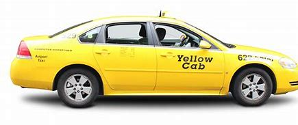
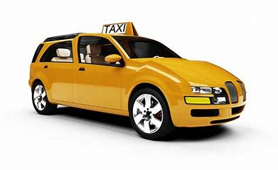

CONTENT
In India, most taxicabs, especially those in Delhi and Mumbai, have distinctive black and yellow liveries with the bottom half painted black and upper half painted yellow. In Kolkata, most taxis are painted yellow with a blue strip in the middle

SERVICES
Every person is looking for a reliable experience that prioritizes their needs and concerns. That’s why, GoIbibo offers an unparalleled experience to users when they are making cab booking online. You can connect with the 24/7 customer.